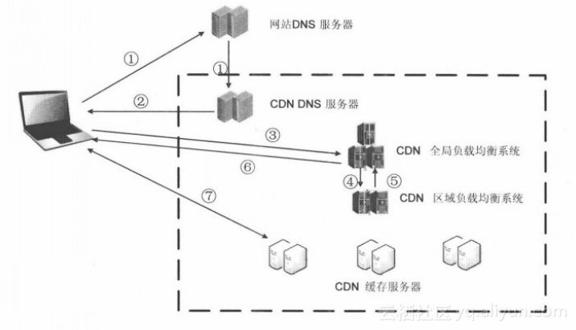

CDN
使用第三方OSS服务的好处是集成了CDN服务，下面来了解一下什么是CDN。
CDN概念
全称:Content Delivery Network或Content Distribute Network，即内容分发网络
是将源站内容分发至最接近用户的节点，使用户可就近取得所需内容，提高用户访问的响应速度和成功率。解决因分布、带宽、服务器性能带来的访问延迟问题，适用于站点加速、点播、直播等场景。
CDN作用
- 本地cache加速
提高了站点服务访问速度，特别是大量图片和静态页面的站点访问速度。
- 镜像服务
消除了不同运营商之间互联的瓶颈造成的影响，实现跨运营商的网络加速，保证不同网络中的用户能得到良好的访问质量。
- 远程加速
远程访问用户根据DNS负载均衡技术智能自动选择Cache服务器，选择最佳、最快的Cache服务器，加速远程访问的速度。
- 宽带优化
自动生成服务器的远程镜像cache服务器，远程用户访问时从cache服务器上读取数据，减少远程访问的宽带、分担网络流量、减轻原站服务器负载压力。
- 集群抗攻击
广泛分别的CDN节点加上节点之间的智能冗余机制，可以有效的防御黑客入侵以及减低各种DoS攻击对服务的影响，同时保证较好的服务质量。
CDN基本原理

最简单的CDN网络由一个DNS服务器和几台缓存服务器组成：
- 当用户点击网站页面上的内容URL，经过本地DNS系统解析，DNS系统会最终将域名的解析权交给CNAME指向的CDN专用DNS服务器。
- CDN的DNS服务器将CDN的全局负载均衡设备IP地址返回用户。
- 用户向CDN的全局负载均衡设备发起内容URL访问请求。
- CDN全局负载均衡设备根据用户IP地址，以及用户请求的内容URL，选择一台用户所属区域的区域负载均衡设备，告诉用户向这台设备发起请求。
- 区域负载均衡设备会为用户选择一台合适的缓存服务器提供服务，选择的依据包括：根据用户IP地址，判断哪一台服务器距用户最近；根据用户所请求的URL中携带的内容名称，判断哪一台服务器上有用户所需内容；查询各个服务器当前的负载情况，判断哪一台服务器尚有服务能力。基于以上这些条件的综合分析之后，区域负载均衡设备会向全局负载均衡设备返回一台缓存服务器的IP地址。
- 全局负载均衡设备把服务器的IP地址返回给用户。
- 用户向缓存服务器发起请求，缓存服务器响应用户请求，将用户所需内容传送到用户终端。如果这台缓存服务器上并没有用户想要的内容，而区域均衡设备依然将它分配给了用户，那么这台服务器就要向它的上一级缓存服务器请求内容，直至追溯到网站的源服务器将内容拉到本地。
CDN实际应用
静态加速
大型网站新浪、网易、腾讯等门户网站图片、.html 、flash文件
动态加速
新浪微博、腾讯微博等
视频加速
大型视频网站：爱奇艺、优酷、土豆、腾讯视频
音频加速
酷狗音乐、百度音乐、腾讯音乐等
CDN使用
常见问题
1.CDN加速是对网站所在服务器加速，还是对其域名加速？
CDN是只对网站的某一个具体的域名加速。如果同一个网站有多个域名，则访客访问加入CDN的域名获得加速效果，访问未加入CDN的域名，或者直接访问IP地址，则无法获得CDN效果。
2.CDN和镜像站点比较有何优势？
CDN对网站的访客完全透明，不需要访客手动选择要访问的镜像站点，保证了网站对访客的友好性。CDN对每个节点都有可用性检查，不合格的节点会第一时间剔出，从而保证了极高的可用率，而镜像站点无法实现这一点。CDN部署简单，对原站基本不做任何改动即可生效。
3.CDN和双线机房相比有何优势？
常见的双线机房只能解决网通和电信互相访问慢的问题，其它ISP（譬如教育网，移动网，铁通）互通的问题还是没得到解决。而CDN是访问者就近取数据，而CDN的节点遍布各ISP，从而保证了网站到任意ISP的访问速度。另外CDN因为其流量分流到各节点的原理，天然获得抵抗网络攻击的能力。
4.CDN使用后，原来的网站是否需要做修改，做什么修改？
一般而言，网站无需任何修改即可使用CDN获得加速效果。只是对需要判断访客IP程序，才需要做少量修改。
5.为什么我的网站更新后，通过CDN后看到网页还是旧网页，如何解决？
由于CDN采用各节点缓存的机制，网站的静态网页和图片修改后，如果CDN缓存没有做相应更新，则看到的还是旧的网页。为了解决这个问题，CDN管理面板中提供了URL推送服务，来通知CDN各节点刷新自己的缓存。在URL推送地址栏中，输入具体的网址或者图片地址，则各节点中的缓存内容即被统一删除，并且当即生效。如果需要推送的网址和图片太多，可以选择目录推送，输入http://www.kkk.com/news即可以对网站下news目录下所有网页和图片进行了刷新。
6.能不能让CDN不缓存某些即时性要求很高的网页和图片？
只需要使用动态页面，asp，php，jsp等动态技术做成的页面不被CDN缓存，无需每次都要刷新。或者采用一个网站两个域名，一个启用CDN，另外一个域名不用CDN，对即时性要求高的页面和图片放在不用CDN的域名下。
7.网站新增了不少网页和图片，这些需要使用URL推送吗？
后来增加的网页和图片，不需要使用URL推送，因为它们本来就不存在缓存中。
8.网站用CDN后，有些地区反映无法访问了，怎么办？
CDN启用后，访客不能访问网站有很多种可能，可能是CDN的问题，也可能是源站点出现故障或者源站点被关闭，还可能是访客自己所在的网络出现问题，甚至我们实际故障排除中，还出现过客户自己计算机中毒，导致无法访问网站。客户报告故障时，可随时联系我们24小时技术部进行处理。
9.哪些情况推荐使用CDN？
一般来说以资讯、内容等为主的网站，具有一定访问体量的网站 资讯网站、政府机构网站、行业平台网站、商城等以动态内容为主的网站 论坛、博客、交友、SNS、网络游戏、搜索/查询、金融等。提供http下载的网站 软件开发商、内容服务提供商、网络游戏运行商、源码下载等有大量流媒体点播应用的网站 拥有视频点播平台的电信运营商、内容服务提供商、体育频道、宽频频道、在线教育、视频博客等